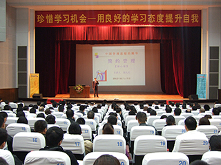

新常态下金融机构如何做好培训
张九元老师
来源：新常态系列课程 点击:235次
职业生涯：
38年的职业生涯是这样度过的：6年政府公务员，8年大型国企中层管理者，4年小型国企法人代表，3年高校理论研究者，17年咨询公司顾问。
课程介绍：
新常态不是个标语口号，是个必须严肃对待的问题，涉及到方方面面。所谓新常态，就是常态的新表现形式。那么，什么是常态呢？常态就是【非常态】的对立面，或曰【不正常状态】的对立面。
在常态情况下，应该怎么做呢？就是不再像过去那样在不正常状态下做事情了。常态下是按照市场规律去做，按照人性特点去做，按照自身的情况去做。进一步说，以后我们做事都要往【常态】方面考虑问题。
新常态下，包括金融机构在内的企业经营和管理都具有和过去不同的新特点，因此作为培训也就要针对这些新特点来进行。
本课程从中国金融机构的实际情况出发，根据以中为体、以西为用的原则，重点对金融机构培训中的主要问题进行了实战性的探讨，给出了一套较为完整的系统建议。
本课程的授课讲师张九元老师，有着39年党龄，40年工作经验，并曾在厅局级党校担任教研室主任，十几年来，每年有80多天的高校总裁班和企业内训的课程，目前还在多家公司担任常年管理顾问。不仅了解培训行业，也十分了解企业。金融机构的培训是他的一个主打方向，先后有天津银行、大连中行、张家口建行等成建制培训，还有北大、清华金融总裁班，都给学员们留下了好的口碑。相信这次金融机构培训负责人的培训一定能够给学员带来贴合实际的启迪和帮助。
课程特色：
1、系统思维。本浓缩课程以系统思想为指导，借鉴西方科学管理的方法，形成了有中国企业管理特色的简约管理体系。
2、简明实战。本课程特别注重中国企业的实际情况。借鉴众多知名企业的成功案例，采取理论与实用相结合的方法，使学员得到即学即用的收获。
3、轻松愉快。这是一门以注重指导企业高、中、基层管理人员实际操作为原则的针对性很强的课程，把理论融入到了具体的操作实践中，使学习变得轻松愉快又卓有成效。
课程重点：
1、深刻认识中国政治经济新常态
2、及时更新金融机构培训新理念
3、给出金融机构培训总框架
4、探讨新常态下金融机构培训新课题
5、师资选择和储备的实用方法
课程对象：
金融机构培训负责人
培训课时：
标准课程2天(12小时)，核心课程一天(6小时)。
课程提纲：
一、正确认识中国经济新常态
1、中高速：减速并不意味着低效能
2、优结构：小微企业得到更多支持
3、新动力：增长动力多元化促发展
4、多挑战：不确定性增加欠账太多
5、重民生：要让老百姓过上好日子
6、更稳健：不再全局性有大起大落
二、理性看待金融行业新趋势
1、经济减速：造成某些领域的需求减少
2、驱动转换：多元驱动力有利小微金融
3、消费多元：社会保障完善会刺激消费
4、政策趋宽：无形的市场手会更加有力
5、利率灵活：金融创新更有发挥的空间
6、民生转旺：政府及民间会向民生倾斜
三、金融机构培训体系新特点
1、渴望理解中央精神
2、迫切进行政策解读
3、需求由集中转分散
4、类型由版权转实战
5、眼光转向中国国内
6、国学智慧备受推崇
四、金融机构培训课程大框架
1、习主席讲话指方向
2、两会标志政策动向
3、主管部门细则学习
4、金融盈利模式探讨
5、金融风险管控方法
6、金融服务技能提升
7、领导力和领导艺术
8、学习中国传统文化
五、师资选择与互动关键环节
1、有一定数量的核心师资储备
2、有核心师资的主打课程资料
3、有和培训体系相对应的课题
4、有和讲师对接培训需求沟通
5、有需求和讲师对接落地流程
6、师资选择的主要标准和权衡
六、培训实施过程更重视实效
1、立足于解决委培单位的问题
2、紧紧抓住主要痛点做足文章
3、委培单位组织能力至关重要
4、与人为善是做好培训的关键
5、要正确理解培训的互动环节
6、自觉维护好三方的良性互动
总结： 根据现场情况做出
说明：
1、案例穿插于讲课当中，不再单独列出
2、提纲通过后再提供PPT
3、课后留出时间回答学员问题